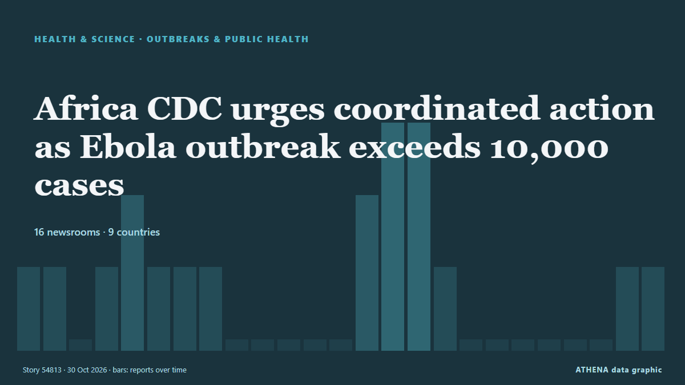

Africa CDC urges coordinated action as Ebola outbreak exceeds 10,000 cases

The Africa Centres for Disease Control and Prevention (Africa CDC) has urged African countries to strengthen cross-border cooperation and coordinate their responses as an Ebola outbreak caused by the… από MyJoyOnline
Αναφέρθηκε ανεξάρτητα από 16 μέσα σε 9 χώρες από τις 27 Οκτ, πρώτο από το Xinhua (English) — page reader· η κάλυψη εξασθενεί. Το ATHENA εκτιμά τον κίνδυνο υψηλό (6.1/10), κυρίως λόγω της σοβαρότητας της βλάβης που περιγράφεται και της ποιότητας της τεκμηρίωσης. Η βεβαιότητα είναι 90% (υψηλή), καθώς το επιβεβαιώνουν 16 ανεξάρτητα μέσα με μέση αξιοπιστία πηγών 73%.
Γιατί έχει σημασία: Οι εξελίξεις στην υγεία και την επιστήμη μπορούν να αλλάξουν τους κινδύνους δημόσιας υγείας, τις ερευνητικές προτεραιότητες και τη ρύθμιση.
Τι άλλαξε: 3 νέες αναφορές από 3 μέσα στο 24ωρο έως 30 Οκτ.
Πρώτη διατύπωση: Africa CDC Commits $1.5mn to Support Kenya’s Ebola Response
Οι τίτλοι των ειδήσεων παρουσιάζονται στα αγγλικά, όπως δημοσιεύτηκαν.
Με μια ματιά
Επιλέγεται, βαθμολογείται και γράφεται από τη δημοσιευμένη μεθοδολογία του ATHENA. Κανένας συντάκτης δεν παρεμβαίνει σε μεμονωμένα γεγονότα. Πώς παράγεται ›
| 27 Oct 16:44 UTC | 1 |
|---|---|
| 27 Oct 19:44 UTC | 1 |
| 27 Oct 22:44 UTC | 0 |
| 28 Oct 01:44 UTC | 1 |
| 28 Oct 04:44 UTC | 2 |
| 28 Oct 07:44 UTC | 1 |
| 28 Oct 10:44 UTC | 1 |
| 28 Oct 13:44 UTC | 1 |
| 28 Oct 16:44 UTC | 0 |
| 28 Oct 19:44 UTC | 0 |
| 28 Oct 22:44 UTC | 0 |
| 29 Oct 01:44 UTC | 0 |
| 29 Oct 04:44 UTC | 0 |
| 29 Oct 07:44 UTC | 2 |
| 29 Oct 10:44 UTC | 3 |
| 29 Oct 13:44 UTC | 3 |
| 29 Oct 16:44 UTC | 1 |
| 29 Oct 19:44 UTC | 0 |
| 29 Oct 22:44 UTC | 0 |
| 30 Oct 01:44 UTC | 0 |
| 30 Oct 04:44 UTC | 0 |
| 30 Oct 07:44 UTC | 0 |
| 30 Oct 10:44 UTC | 0 |
| 30 Oct 13:44 UTC | 1 |
| 30 Oct 16:44 UTC | 1 |
| 29 Oct 13:02 UTC | 5.5 |
|---|---|
| 29 Oct 21:08 UTC | 6.6 |
| 30 Oct 18:56 UTC | 6.1 |
Γιατί αυτοί οι αριθμοί
Σημασία
Κίνδυνος
Βεβαιότητα
Η κάλυψη — ποιος το ανέφερε και πότε
ο τίτλος όπως δημοσιεύτηκε · ανοίγει το πρωτότυπο- Xinhua (English) — page reader · Κίνα · ChinaTanzania strengthens Ebola preparedness at Kenya border
- The Standard · Κένυα · KenyaKenya becomes regional abduction hub
- AllAfrica · AFRAfrica: Africa CDC Commends Kenya's Decisive Leadership and Strengthens Joint Efforts to Contain Ebola
- Capital FM Kenya · Κένυα · KenyaAfrica CDC Commits $1.5mn to Support Kenya’s Ebola Response
- The Standard · Κένυα · KenyaHow Kenya has become regional abductors' paradise
- The Guardian · Ηνωμένο Βασίλειο · United KingdomAfrica’s ‘unprecedented’ Ebola outbreak could reach UK, says top health official
- Daily News · Τανζανία · TanzaniaTanzania, Kenya agree to develop a framework for food radioanalysis certification
- People Daily · Κένυα · KenyaMTRH says 10 suspected Ebola cases tested negative
- ECDC news · Σουηδία · SwedenFirst public health emergency preparedness assessments across Europe show both commitment and recurring challenges
- Graphic Online · Γκάνα · GhanaEbola threat: Government tightens all entry controls
- Channels TV · Νιγηρία · NigeriaEbola: A’Ibom Health Commissioner Tasks DSNOs On Heightened Surveillance
- Capital FM · Κένυα · KenyaAfrica urged to boost domestic funding for food security as climate risks mount
- MyJoyOnline · Γκάνα · GhanaAfrica CDC urges coordinated action as Ebola outbreak exceeds 10,000 cases
- Capital FM Kenya · Κένυα · KenyaAfrica’s biodiversity goals face data, funding and capacity gaps, experts warn
- Anadolu Agency (English) · Τουρκία · TurkeyAfrican officials agree to keep borders open despite Ebola outbreak
- SABC News · Νότια Αφρική · South AfricaAfrica CDC calls for stronger coordination amid Ebola spread
- Premium Times · Νιγηρία · NigeriaEbola: Africa CDC warns continent ‘not winning’ as cases surpass 10,000
- AllAfrica · AFRKenya: No, Kenya's Health Minister Did Not Announce an Impending Ebola Lockdown
- Vanguard · Νιγηρία · NigeriaEbola outbreak not under control in Africa, CDC warns